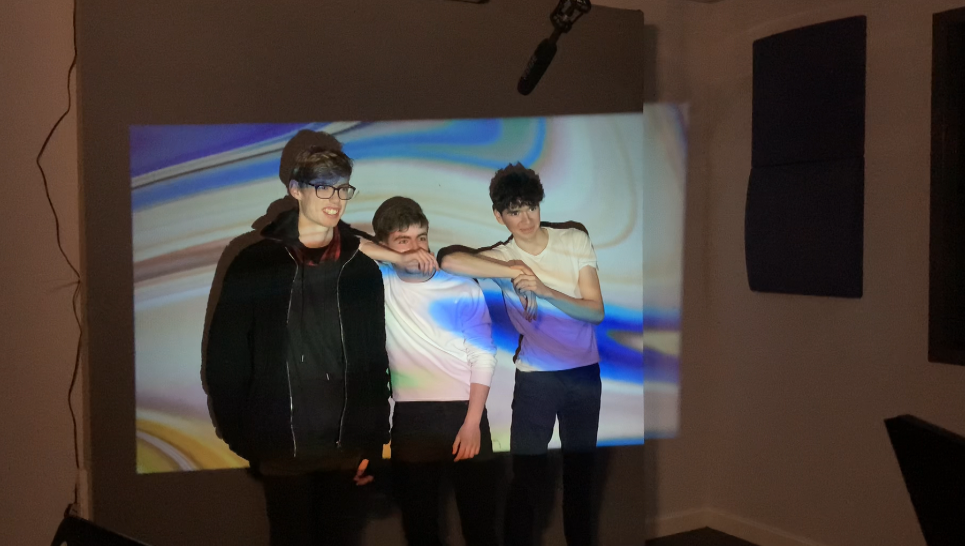
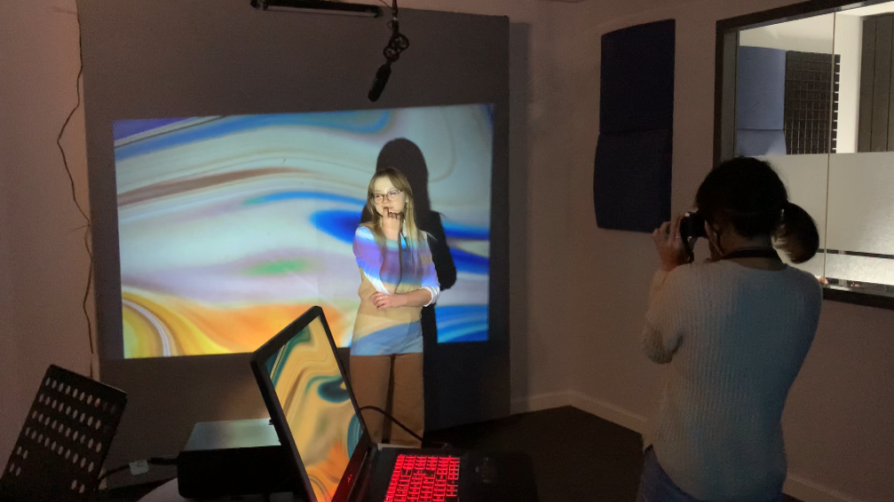
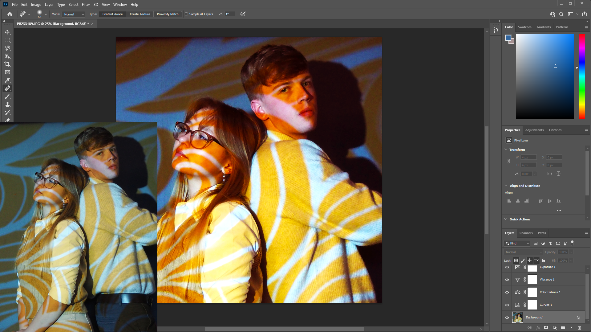

About Project and Play
Project and Play, a photography project to encapsulate how overpowering lighting can be. What if we make it dramatic? To the point where you may think it's perhaps too much. As someone who is overly obsessed with colour theory, I've decided to show you how playful you can be with the use of coloured lighting even if it is too much! I can only be so grateful to the artistic and creative minds who have influenced the use of lighting. It's used everywhere! From what we see in music videos, to your favorite movies to intensify the shot, or the great and overpowering and inspirational scenes that make your heart pound. Let me immerse you into the world of overpowering lighting and saturated colours.
How this project began
I have always loved photography as a young child, I very much got this from my family. I did Art for the Leaving Certificate, and I guess you can say my venture in photography started there. I even studied film noir to understand cinematography techniques. . While film noir is black and white. I thought, could the same be achieved with colours? And by colours, I mean LOTS OF IT. I found it absolutely fascinating how dramatic the grey-scale and saturation can exemplify the viewer's experience. Heck! I can't even describe the effect it left on me I just have to say that colour is just an aesthetic on it's own.
The Impact Of Lighting
Lighting, is one of the most effective elements that capture atmosphere and emotions. It's one of the most powerful tools in photography . Lighting can be used in many different ways. It can vary from extremely harsh or natural lighting and it all just depends on what you want to capture. One of my biggest tips when it comes to lighting, is consider what impact you want to leave on the viewers. Project and Play encapsulates how just playful you can be with colours, how it adds personality to the figure. How it compliments the face and the overpowering effect it applies.
Editing Your Results
I used Photoshop to achieve the final results. Don't panic if you don't have Photoshop there are many free and beginner friendly alternatives such as Gimp, or Paint.net. You can even use some apps on your phone to achieve certain vibes. On my phone I tend to use VSCO or the default editor. Apart from that, I cannot stress how experimenting is the only way you can really achieve the best. I tampered with a lot of exposure, color balance, curves and vibrance in order to make the colors pop. I achieved some blur effect with gaussian blur, and you can even hide some of the imperfections using the heal tool in Photoshop. All this from experimenting. A little jump can take you far in your results.